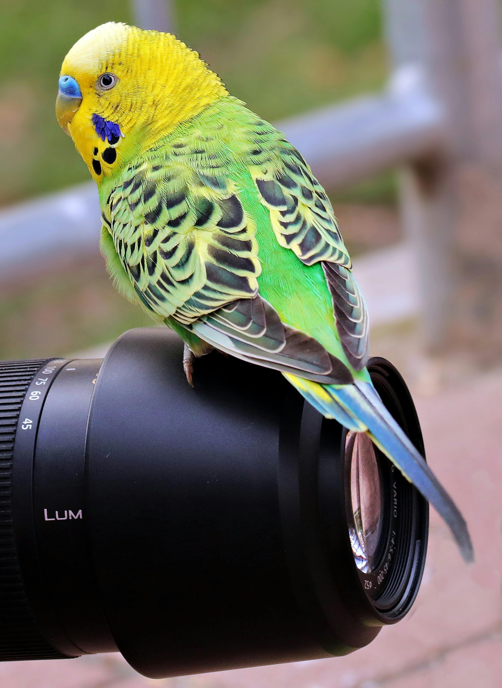
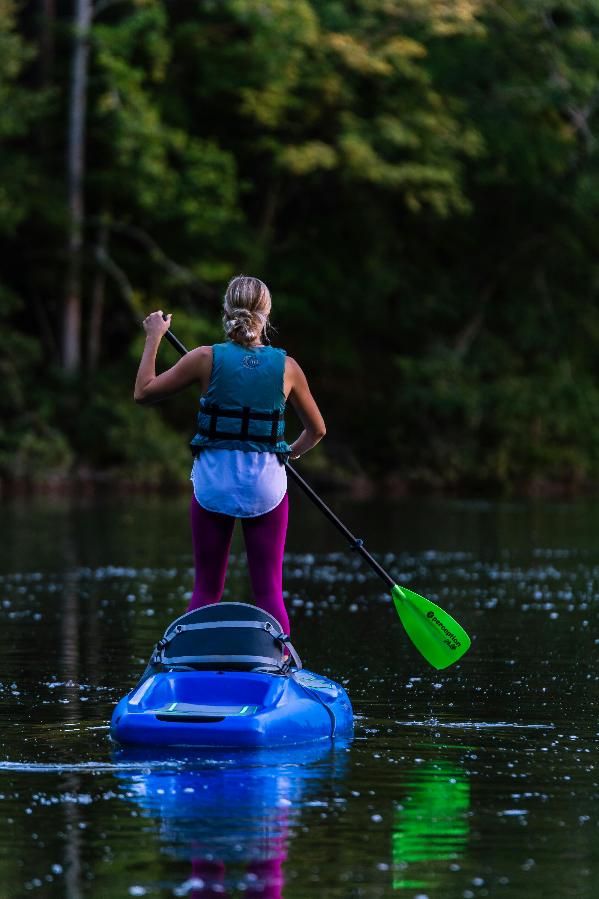

Activities
Hiking Adventures
Embark on a journey of discovery through the breathtaking landscapes
of Wildlife Haven National Park with our hiking adventures. With miles
of well-maintained trails, ranging from easy strolls to challenging
treks, there's something for hikers of all ages and skill levels to
enjoy.
Immerse yourself in the serene beauty of dense forests, meandering
rivers, and awe-inspiring vistas as you explore our network of scenic
trails. Whether you're seeking a leisurely walk to reconnect with
nature or a rugged trek to test your endurance, our park offers a
diverse array of hiking experiences to satisfy your wanderlust.
Along the way, keep an eye out for the abundant wildlife that calls
our park home. From graceful deer and playful squirrels to majestic
eagles soaring overhead, every hike is an opportunity to encounter the
wonders of the natural world up close.
With trail options ranging from short loops to multi-day excursions,
you can tailor your hiking adventure to suit your preferences and time
constraints. Pack a picnic lunch and pause at one of our picturesque
viewpoints to soak in the panoramic views, or venture off the beaten
path to discover hidden gems waiting to be uncovered.
Whether you're a seasoned hiker or a novice explorer, our hiking
adventures promise unforgettable experiences and memories to last a
lifetime. Lace up your boots, grab your backpack, and let the trails
of Wildlife Haven National Park lead you on an unforgettable journey
into the heart of nature.
Wildlife Photography Workshops

Capture the beauty and majesty of Wildlife Haven National Park's
diverse wildlife with our Wildlife Photography Workshops. Led by
experienced photographers and naturalists, these workshops offer
enthusiasts of all skill levels the opportunity to hone their
photography skills while immersing themselves in the stunning natural
landscapes of our park.
Join us for an unforgettable experience as we venture into the heart
of the wilderness to seek out the park's most iconic inhabitants. From
elusive predators to delicate songbirds, our workshops provide unique
opportunities to observe and photograph a wide range of species in
their natural habitat.
Our knowledgeable guides will share insights into the behavior and
habits of the park's wildlife, helping you to anticipate and capture
the perfect shot. Learn techniques for composition, lighting, and
wildlife tracking as you explore scenic trails, hidden valleys, and
tranquil lakeshores in search of photographic inspiration.
Whether you're a beginner looking to master the basics of wildlife
photography or an experienced photographer seeking to refine your
craft, our workshops offer personalized instruction and hands-on
guidance to help you achieve your photography goals.
With small group sizes and flexible itineraries, our Wildlife
Photography Workshops are tailored to provide a rewarding and
enriching experience for every participant. Bring your camera, pack
your sense of adventure, and join us for an unforgettable journey into
the wild world of wildlife photography at Wildlife Haven National
Park.
Stargazing Nights

Escape the city lights and journey into the depths of the cosmos with
our Stargazing Nights at Wildlife Haven National Park. Immerse
yourself in the awe-inspiring beauty of the night sky as you embark on
an unforgettable celestial adventure guided by expert astronomers and
educators.
Far from the glow of urban civilization, our park offers the perfect
setting for stargazing enthusiasts of all levels. With minimal light
pollution and clear, dark skies, you'll be treated to a mesmerizing
display of stars, planets, and celestial phenomena.
Join us for an evening under the stars as we explore the wonders of
the universe through telescopes, binoculars, and naked-eye
observation. Learn to identify constellations, planets, and other
celestial objects as our knowledgeable guides share fascinating
insights into the mysteries of the cosmos.
Whether you're a seasoned astronomer or a curious beginner, our
Stargazing Nights provide an immersive and educational experience for
all. Witness the beauty of distant galaxies, star clusters, and
nebulae as you marvel at the infinite expanse of space stretching out
before you.
With a variety of programs and events scheduled throughout the year,
there's always something new to discover at our Stargazing Nights.
Bring your family, friends, or that special someone, and join us for
an unforgettable evening of wonder, discovery, and stargazing magic at
Wildlife Haven National Park.
Kayaking Expeditions

Embark on a water adventure like no other with our Kayaking
Expeditions at Wildlife Haven National Park. Paddle through pristine
waters, navigate gentle streams, and explore hidden coves as you
discover the natural beauty of our park from a unique and exhilarating
perspective.
Our Kayaking Expeditions are designed for adventurers of all levels,
from beginners looking to try kayaking for the first time to
experienced paddlers seeking a thrilling aquatic journey. With a fleet
of well-maintained kayaks and experienced guides, we provide a safe
and enjoyable experience for all participants.
Glide through mirror-like lakes surrounded by towering forests,
navigate meandering rivers with gentle currents, and witness the
beauty of our park's diverse ecosystems. As you paddle, keep an eye
out for wildlife along the shores—ducks, beavers, and maybe even a
glimpse of a majestic eagle soaring overhead.
Whether you prefer a leisurely paddle along calm waters or an
adrenaline-filled expedition through more challenging terrain, our
Kayaking Expeditions cater to a variety of preferences. Join one of
our guided tours to learn about the park's ecology, history, and
unique features from knowledgeable guides who are passionate about
sharing the wonders of our waterways.
For those seeking a more immersive experience, consider a multi-day
kayaking expedition with camping along the water's edge. Wake up to
the sounds of nature, surrounded by the tranquility of the great
outdoors.
Gear up, grab a paddle, and let the rhythmic sounds of water beneath
your kayak lead you to unforgettable moments on our Kayaking
Expeditions at Wildlife Haven National Park.
Bird Watching Tours

Embark on a birdwatching adventure like no other with our Bird
Watching Tours at Wildlife Haven National Park. Join expert
ornithologists and naturalists as we explore the rich biodiversity of
our park and discover a dazzling array of avian species in their
natural habitats.
Nestled within diverse ecosystems, our park provides a haven for
hundreds of bird species throughout the year, from migratory waterfowl
to elusive forest dwellers. Whether you're a seasoned birder or a
curious beginner, our guided tours offer unparalleled opportunities to
observe and photograph birds in their natural environment.
Venture into lush forests, tranquil wetlands, and scenic meadows as
you search for a variety of feathered inhabitants. From vibrant
songbirds flitting among the branches to majestic raptors soaring
overhead, every outing promises exciting encounters and memorable
sightings.
Our knowledgeable guides will share insights into the behavior,
habitat, and conservation status of the birds we encounter, enriching
your birdwatching experience with fascinating facts and anecdotes.
Learn to identify species by their distinctive calls, plumage
patterns, and behaviors, and gain a deeper appreciation for the
intricate web of life that surrounds us.
With small group sizes and personalized attention, our Bird Watching
Tours cater to birders of all skill levels and interests. Whether
you're seeking rare species to add to your life list or simply enjoy
the beauty of birds in their natural habitat, our tours offer a
rewarding and enriching experience for every participant.
Grab your binoculars, pack your field guide, and join us for an
unforgettable journey into the captivating world of birds at Wildlife
Haven National Park.